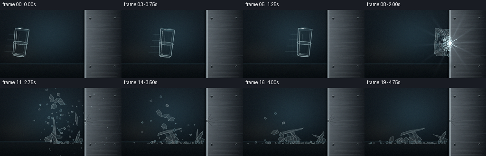
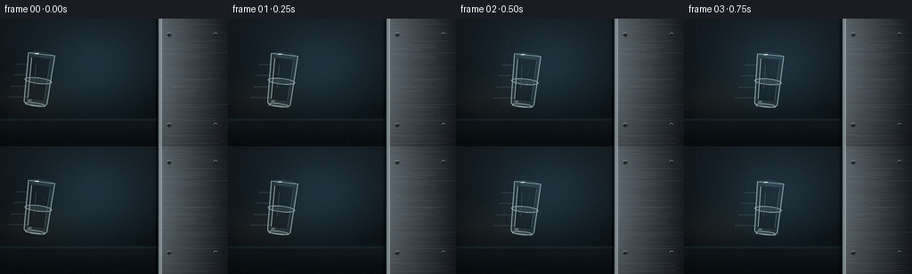

CODING AGENTS AS PIXEL WORLD MODELS
traex/DeepSeek-V4.1-Flash · phygen_134
点击播放 · 原生 RGB 像素
逐轮保存的候选
回放视频、检查图与代码变化。
每份候选均可单独播放。实际图片检查记录在下方工具轨迹中。
候选 01播放与检查图
点击播放 · 原生 RGB 像素


展开代码变化
--- 上一保存版本
+++ 本次保存版本
@@ -0,0 +1,561 @@
+from __future__ import annotations
+
+import math
+from pathlib import Path
+
+import imageio.v2 as imageio
+import numpy as np
+from PIL import Image, ImageDraw, ImageFilter
+
+import artifact_io
+
+
+ROOT = Path(__file__).resolve().parent
+W, H, N, FPS = 256, 144, 20, 4.0
+SS = 4
+SW, SH = W * SS, H * SS
+IMPACT_FRAME = 8
+IMPACT = np.array([180.0, 70.0])
+WALL_X = 178.0
+FLOOR_Y = 119.0
+RNG = np.random.default_rng(134)
+
+
+def _rot(points: np.ndarray, angle: float) -> np.ndarray:
+ c, s = math.cos(angle), math.sin(angle)
+ matrix = np.array([[c, -s], [s, c]], dtype=np.float64)
+ return points @ matrix.T
+
+
+def _transform(points, center, angle=0.0, scale=1.0):
+ points = np.asarray(points, dtype=np.float64) * scale
+ return _rot(points, angle) + np.asarray(center, dtype=np.float64)
+
+
+def _sp(points):
+ return [tuple(float(x) * SS for x in point) for point in points]
+
+
+def _ellipse_points(cx, cy, rx, ry, count=48):
+ theta = np.linspace(0.0, math.tau, count, endpoint=False)
+ return np.column_stack((cx + rx * np.cos(theta), cy + ry * np.sin(theta)))
+
+
+def _draw_closed(draw, points, fill=None, outline=None, width=1):
+ pts = _sp(points)
+ draw.polygon(pts, fill=fill)
+ if outline is not None:
+ draw.line(pts + [pts[0]], fill=outline, width=max(1, int(round(width * SS))), joint="curve")
+
+
+def _draw_ellipse(draw, center, angle, rx, ry, fill=None, outline=None, width=1):
+ pts = _ellipse_points(0.0, 0.0, rx, ry)
+ pts = _transform(pts, center, angle)
+ _draw_closed(draw, pts, fill=fill, outline=outline, width=width)
+
+
+def _soft_shadow(base, center, radius, strength):
+ layer = Image.new("RGBA", (SW, SH), (0, 0, 0, 0))
+ draw = ImageDraw.Draw(layer)
+ x, y = center
+ rx, ry = radius
+ draw.ellipse(
+ ((x - rx) * SS, (y - ry) * SS, (x + rx) * SS, (y + ry) * SS),
+ fill=(0, 0, 0, int(255 * strength)),
+ )
+ layer = layer.filter(ImageFilter.GaussianBlur(4.0 * SS))
+ return Image.alpha_composite(base, layer)
+
+
+def make_background():
+ yy, xx = np.mgrid[0:H, 0:W].astype(np.float32)
+ yn = yy / (H - 1)
+ xn = xx / (W - 1)
+
+ top = np.array([22.0, 30.0, 37.0])
+ bottom = np.array([7.0, 11.0, 15.0])
+ background = top * (1.0 - yn[..., None]) + bottom * yn[..., None]
+
+ key = np.exp(-(((xx - 103.0) / 86.0) ** 2 + ((yy - 56.0) / 72.0) ** 2) * 1.7)
+ fill = np.exp(-(((xx - 32.0) / 64.0) ** 2 + ((yy - 91.0) / 34.0) ** 2) * 2.0)
+ background += key[..., None] * np.array([15.0, 27.0, 31.0])
+ background += fill[..., None] * np.array([12.0, 10.0, 7.0])
+
+ floor_blend = 1.0 / (1.0 + np.exp(np.clip(-(yy - 114.0) * 0.9, -60.0, 60.0)))
+ floor_color = np.array([9.0, 15.0, 19.0]) + 9.0 * np.exp(-((yy - 116.0) / 17.0) ** 2)[..., None]
+ background = background * (1.0 - floor_blend[..., None]) + floor_color * floor_blend[..., None]
+
+ horizon = np.exp(-((yy - 113.5) / 1.2) ** 2)
+ background += horizon[..., None] * np.array([11.0, 19.0, 22.0])
+
+ wall = xx >= WALL_X
+ u = np.clip((xx - WALL_X) / (W - WALL_X), 0.0, 1.0)
+ wall_color = (
+ np.array([104.0, 114.0, 121.0]) * (1.0 - u[..., None])
+ + np.array([28.0, 34.0, 40.0]) * u[..., None]
+ )
+ wall_shade = 0.84 + 0.16 * (1.0 - yn)
+ wall_color *= wall_shade[..., None]
+
+ brushed = (
+ 2.0 * np.sin(yy * 2.3 + 0.7 * np.sin(xx * 0.11))
+ + 1.2 * np.sin(yy * 8.1 + xx * 0.025)
+ + 0.8 * np.sin(yy * 18.7)
+ )
+ wall_color += brushed[..., None] * np.array([0.7, 0.8, 0.9])
+ background = np.where(wall[..., None], wall_color, background)
+
+ edge = np.exp(-((xx - (WALL_X + 1.2)) / 1.6) ** 2)
+ background += edge[..., None] * np.array([46.0, 54.0, 58.0])
+ edge_shadow = np.exp(-((xx - (WALL_X - 2.0)) / 2.2) ** 2)
+ background -= edge_shadow[..., None] * np.array([12.0, 13.0, 14.0])
+
+ vignette = 1.0 - 0.38 * np.clip(((xn - 0.48) * 1.05) ** 2 + ((yn - 0.47) * 1.15) ** 2, 0.0, 1.0)
+ background *= vignette[..., None]
+ background += RNG.normal(0.0, 0.8, background.shape)
+ background = np.clip(background, 0.0, 255.0).astype(np.uint8)
+ bg = Image.fromarray(background, "RGB").resize((SW, SH), Image.Resampling.BICUBIC).convert("RGBA")
+
+ texture = Image.new("RGBA", (SW, SH), (0, 0, 0, 0))
+ draw = ImageDraw.Draw(texture)
+
+ # Long, shallow brush marks and a few stronger seams make the wall read as steel.
+ for _ in range(105):
+ y = RNG.uniform(2.0, H - 2.0)
+ x0 = RNG.uniform(WALL_X + 3.0, 213.0)
+ x1 = RNG.uniform(x0 + 8.0, W - 1.0)
+ shade = int(RNG.uniform(16, 42))
+ draw.line((x0 * SS, y * SS, x1 * SS, y * SS), fill=(190, 203, 209, shade), width=1)
+ for y in (38.0, 96.0):
+ draw.line((WALL_X * SS, y * SS, W * SS, y * SS), fill=(8, 12, 15, 46), width=SS)
+ draw.line((WALL_X * SS, (y + 0.7) * SS, W * SS, (y + 0.7) * SS), fill=(160, 174, 181, 24), width=SS)
+
+ # Beveled left face of the steel block.
+ draw.rectangle((176.5 * SS, 0, 178.0 * SS, SH), fill=(14, 18, 21, 230))
+ draw.rectangle((178.0 * SS, 0, 181.0 * SS, SH), fill=(119, 131, 137, 235))
+ draw.line((181.0 * SS, 0, 181.0 * SS, SH), fill=(205, 216, 219, 125), width=SS)
+
+ # Restrained industrial fasteners.
+ for x in (190.0, 242.0):
+ for y in (18.0, 120.0):
+ draw.ellipse(((x - 2.4) * SS, (y - 2.4) * SS, (x + 2.4) * SS, (y + 2.4) * SS), fill=(31, 38, 42, 255))
+ draw.arc(((x - 2.4) * SS, (y - 2.4) * SS, (x + 2.4) * SS, (y + 2.4) * SS), 190, 335, fill=(149, 160, 164, 150), width=SS)
+ draw.line(((x - 1.5) * SS, y * SS, (x + 1.5) * SS, y * SS), fill=(8, 11, 13, 160), width=SS)
+
+ bg = Image.alpha_composite(bg, texture)
+ return bg
+
+
+def draw_cup(base, cx, cy, angle_deg, opacity=1.0, ghost=False):
+ layer = Image.new("RGBA", (SW, SH), (0, 0, 0, 0))
+ draw = ImageDraw.Draw(layer)
+ angle = math.radians(angle_deg)
+ center = (cx, cy)
+
+ body = np.array([[-15.0, -30.0], [-13.0, 25.0], [-10.5, 28.0], [10.5, 28.0], [13.0, 25.0], [15.0, -30.0]])
+ inner = np.array([[-12.3, -25.5], [-10.5, 21.5], [10.5, 21.5], [12.3, -25.5]])
+ body_world = _transform(body, center, angle)
+ inner_world = _transform(inner, center, angle)
+
+ fill_alpha = int((8 if ghost else 24) * opacity)
+ _draw_closed(draw, body_world, fill=(176, 226, 234, fill_alpha))
+ _draw_closed(draw, inner_world, fill=(7, 18, 23, int((8 if ghost else 12) * opacity)))
+
+ rim_alpha = int((48 if ghost else 145) * opacity)
+ _draw_ellipse(draw, center, angle, 15.0, 3.3, fill=(190, 234, 240, int((12 if ghost else 28) * opacity)),
+ outline=(217, 249, 251, rim_alpha), width=1.0)
+ _draw_ellipse(draw, _transform(np.array([[0.0, -30.0]]), center, angle)[0], angle,
+ 12.4, 2.2, outline=(93, 160, 170, int((35 if ghost else 94) * opacity)), width=0.65)
+
+ base_center = _transform(np.array([[0.0, 27.0]]), center, angle)[0]
+ _draw_ellipse(draw, base_center, angle, 10.8, 1.9,
+ fill=(200, 236, 240, int((18 if ghost else 43) * opacity)),
+ outline=(220, 247, 249, int((58 if ghost else 145) * opacity)), width=1.0)
+
+ edge_alpha = int((55 if ghost else 154) * opacity)
+ outline = (213, 244, 247, edge_alpha)
+ _draw_closed(draw, body_world, outline=outline, width=0.9)
+
+ # Thin, bright refraction lines give the cup its glassy volume.
+ highlights = [
+ ([-10.8, -25.0], [-9.4, 20.8], (235, 255, 255, int((42 if ghost else 145) * opacity)), 1.05),
+ ([10.7, -24.5], [9.2, 20.5], (219, 249, 251, int((26 if ghost else 92) * opacity)), 0.72),
+ ([-5.0, -18.0], [-4.0, 8.0], (245, 255, 255, int((18 if ghost else 58) * opacity)), 0.6),
+ ]
+ for a, b, color, width in highlights:
+ p0, p1 = _transform(np.array([a, b]), center, angle)
+ draw.line((p0[0] * SS, p0[1] * SS, p1[0] * SS, p1[1] * SS), fill=color, width=max(1, int(width * SS)))
+
+ # A small rim glint and base caustic sell the specular material.
+ glint = _transform(np.array([[-7.2, -30.4], [-3.0, -31.1], [-3.8, -29.5], [-7.8, -29.3]]), center, angle)
+ _draw_closed(draw, glint, fill=(250, 255, 255, int((65 if ghost else 220) * opacity)))
+ caustic = _transform(np.array([[-8.8, 22.4], [-4.8, 21.8], [-5.4, 26.5], [-9.2, 26.0]]), center, angle)
+ _draw_closed(draw, caustic, fill=(224, 252, 250, int((24 if ghost else 82) * opacity)))
+
+ if ghost:
+ layer = layer.filter(ImageFilter.GaussianBlur(0.7 * SS))
+ return Image.alpha_composite(base, layer)
+
+
+BIG_SHARDS = [
+ np.array([[-15, -30], [-10.8, -27], [-10.0, -6], [-12.6, 8], [-13.3, 24], [-15, 18]]),
+ np.array([[-14.8, -30.5], [-7.6, -30.2], [-4.6, -23.5], [-9.7, -18.5], [-14.7, -21.0]]),
+ np.array([[-7.4, -30.1], [-0.8, -29.4], [-2.0, -19.0], [-7.6, -14.2], [-9.9, -22.6]]),
+ np.array([[-0.4, -29.5], [6.3, -29.2], [5.0, -19.8], [0.2, -13.8], [-2.2, -20.1]]),
+ np.array([[6.6, -29.2], [14.8, -29.5], [13.9, -21.0], [10.2, -15.4], [4.7, -19.5]]),
+ np.array([[14.6, -28.8], [15.1, -20.0], [14.5, -8.5], [12.2, -0.5], [10.3, -10.8]]),
+ np.array([[-12.8, 1.0], [-6.0, -0.2], [-5.2, 10.2], [-7.2, 22.4], [-11.0, 26.8], [-13.2, 15.0]]),
+ np.array([[-5.8, -0.3], [0.8, 1.1], [1.2, 12.0], [-1.3, 27.4], [-5.0, 20.8], [-5.7, 9.2]]),
+ np.array([[1.0, 1.0], [7.6, 1.5], [7.1, 14.8], [4.0, 26.2], [1.1, 20.0]]),
+ np.array([[7.8, 1.2], [13.0, -0.8], [12.7, 12.4], [10.2, 26.5], [7.0, 20.8]]),
+ np.array([[-10.5, 17.7], [1.0, 16.9], [2.8, 27.6], [-9.9, 27.7], [-12.5, 22.2]]),
+ np.array([[1.1, 17.2], [11.4, 16.3], [12.7, 26.5], [3.0, 27.7]]),
+]
+
+
+def make_shards():
+ shards = []
+ cup_angle = math.radians(3.2)
+ cup_center = np.array([163.0, 70.0])
+ contact = np.array([180.0, 70.0])
+
+ for index, local_poly in enumerate(BIG_SHARDS):
+ world = _transform(local_poly, cup_center, cup_angle)
+ centroid = world.mean(axis=0)
+ rel = world - centroid
+ radius = max(3.0, float(np.max(np.linalg.norm(rel, axis=1))))
+ radial = centroid - contact
+ outward = radial / max(1e-3, np.linalg.norm(radial))
+
+ vx = -68.0 + 0.55 * radial[0] + RNG.uniform(-24.0, 24.0)
+ vy = 2.5 * radial[1] + RNG.uniform(-30.0, 30.0)
+ if index in (5, 9, 11):
+ vx += RNG.uniform(48.0, 82.0)
+ shards.append(
+ {
+ "rel": rel,
+ "center": centroid.copy(),
+ "radius": radius,
+ "vel": np.array([vx, vy]),
+ "angle": RNG.uniform(-0.35, 0.35),
+ "spin": RNG.uniform(-7.0, 7.0),
+ "tint": RNG.choice([(218, 249, 250), (190, 235, 239), (234, 255, 254)]),
+ "alpha": int(RNG.uniform(65, 116)),
+ "large": True,
+ }
+ )
+
+ for _ in range(62):
+ x = RNG.uniform(-14.0, 15.0)
+ y = RNG.uniform(-29.0, 27.0)
+ size = RNG.uniform(0.7, 2.9)
+ local = np.array(
+ [
+ [-size, -size * 0.35],
+ [size * RNG.uniform(0.35, 1.2), -size],
+ [size * 1.15, size * 0.45],
+ [-size * 0.4, size],
+ ]
+ )
+ world = _transform(local, np.array([163.0 + x, 70.0 + y]), cup_angle)
+ centroid = world.mean(axis=0)
+ rel = world - centroid
+ radius = max(0.8, float(np.max(np.linalg.norm(rel, axis=1))))
+ radial = centroid - contact
+ shards.append(
+ {
+ "rel": rel,
+ "center": centroid,
+ "radius": radius,
+ "vel": np.array([-38.0 + 0.5 * radial[0] + RNG.uniform(-85, 35), 3.0 * radial[1] + RNG.uniform(-65, 65)]),
+ "angle": RNG.uniform(-math.pi, math.pi),
+ "spin": RNG.uniform(-15.0, 15.0),
+ "tint": RNG.choice([(223, 250, 251), (180, 227, 234), (244, 255, 255)]),
+ "alpha": int(RNG.uniform(48, 128)),
+ "large": False,
+ }
+ )
+ return shards
+
+
+SHARDS = make_shards()
+
+
+def shard_states_at(t):
+ states = []
+ dt = 1.0 / 120.0
+ steps = max(0, int(round(t / dt)))
+ for shard in SHARDS:
+ center = shard["center"].copy()
+ vel = shard["vel"].copy()
+ angle = shard["angle"]
+ spin = shard["spin"]
+ radius = shard["radius"]
+
+ for _ in range(steps):
+ vel *= 0.994
+ vel[1] += 105.0 * dt
+ center += vel * dt
+ angle += spin * dt
+ if center[1] + radius > FLOOR_Y:
+ center[1] = FLOOR_Y - radius
+ if vel[1] > 0:
+ vel[1] *= -0.27
+ vel[0] *= 0.88
+ spin *= 0.82
+ if center[0] + radius > WALL_X:
+ center[0] = WALL_X - radius
+ if vel[0] > 0:
+ vel[0] *= -0.34
+ spin *= 0.72
+ if center[0] - radius < -3.0:
+ center[0] = -3.0 + radius
+ vel[0] = abs(vel[0]) * 0.32
+ states.append((shard, center, angle))
+ return states
+
+
+def draw_shards(base, frame):
+ if frame < IMPACT_FRAME:
+ return base
+ tau = (frame - IMPACT_FRAME) / FPS
+ layer = Image.new("RGBA", (SW, SH), (0, 0, 0, 0))
+ draw = ImageDraw.Draw(layer)
+
+ states = shard_states_at(tau)
+ states.sort(key=lambda item: (item[0]["large"], item[0]["radius"]), reverse=True)
+ for shard, center, angle in states:
+ points = _rot(shard["rel"], angle) + center
+ alpha = shard["alpha"]
+ if tau > 1.8:
+ alpha = int(alpha * max(0.72, 1.0 - (tau - 1.8) * 0.12))
+ tint = shard["tint"]
+ _draw_closed(draw, points, fill=(*tint, max(22, alpha // 3)), outline=(*tint, alpha), width=0.72)
+ if shard["large"]:
+ p0 = points[0]
+ p1 = points[len(points) // 2]
+ draw.line(
+ (p0[0] * SS, p0[1] * SS, p1[0] * SS, p1[1] * SS),
+ fill=(247, 255, 255, min(155, alpha + 34)),
+ width=max(1, int(0.55 * SS)),
+ )
+ edge = points[np.argmax(points[:, 1])]
+ draw.line(
+ (edge[0] * SS, (edge[1] - 0.6) * SS, (edge[0] + 1.1) * SS, (edge[1] - 0.2) * SS),
+ fill=(116, 184, 194, 74),
+ width=SS,
+ )
+ return Image.alpha_composite(base, layer)
+
+
+PARTICLES = []
+for _ in range(95):
+ PARTICLES.append(
+ {
+ "p0": np.array([RNG.uniform(167.0, 181.0), RNG.uniform(55.0, 87.0)]),
+ "v": np.array([RNG.uniform(-120.0, 72.0), RNG.uniform(-95.0, 95.0)]),
+ "life": RNG.uniform(0.35, 1.65),
+ "size": RNG.uniform(0.3, 1.4),
+ "phase": RNG.uniform(0.0, math.tau),
+ }
+ )
+
+
+def draw_particles(base, frame):
+ if frame < IMPACT_FRAME:
+ return base
+ tau = (frame - IMPACT_FRAME) / FPS
+ layer = Image.new("RGBA", (SW, SH), (0, 0, 0, 0))
+ draw = ImageDraw.Draw(layer)
+ for particle in PARTICLES:
+ life = particle["life"]
+ if tau > life:
+ continue
+ fade = max(0.0, 1.0 - tau / life)
+ p = particle["p0"] + particle["v"] * tau
+ p[1] += 44.0 * tau * tau
+ p[0] += 1.8 * math.sin(particle["phase"] + tau * 8.0)
+ size = particle["size"] * (0.65 + 0.35 * fade)
+ color = (220, 249, 252, int(170 * fade))
+ draw.ellipse(
+ ((p[0] - size) * SS, (p[1] - size) * SS, (p[0] + size) * SS, (p[1] + size) * SS),
+ fill=color,
+ )
+ if particle["size"] > 1.0 and tau < 0.55:
+ draw.line(
+ ((p[0] - particle["v"][0] * 0.018) * SS, (p[1] - particle["v"][1] * 0.018) * SS, p[0] * SS, p[1] * SS),
+ fill=(180, 233, 240, int(80 * fade)),
+ width=SS,
+ )
+ return Image.alpha_composite(base, layer)
+
+
+def add_impact_light(image, frame):
+ if frame < IMPACT_FRAME:
+ return image
+ tau = (frame - IMPACT_FRAME) / FPS
+ envelope = math.exp(-tau / 0.24)
+ if envelope < 0.008:
+ return image
+
+ yy, xx = np.mgrid[0:H, 0:W].astype(np.float32)
+ dx = xx - IMPACT[0]
+ dy = yy - IMPACT[1]
+ dist = np.sqrt(dx * dx + dy * dy)
+ core = np.exp(-(dist / (3.0 + 4.0 * tau)) ** 2)
+ halo = np.exp(-(dist / (14.0 + 26.0 * tau)) ** 2)
+ rays = np.exp(-(dist / 48.0) ** 2) * (0.5 + 0.5 * np.cos(np.arctan2(dy, dx) * 12.0 + 0.8)) ** 10
+ light = np.clip(envelope * (145.0 * core + 32.0 * halo + 24.0 * rays), 0.0, 210.0)
+
+ light_rgb = np.clip(light[..., None] * np.array([0.78, 0.94, 1.0]), 0.0, 255.0).astype(np.uint8)
+ light_image = Image.fromarray(light_rgb, "RGB").resize((SW, SH), Image.Resampling.BICUBIC)
+ arr = np.asarray(image.convert("RGB")).astype(np.float32)
+ arr += np.asarray(light_image).astype(np.float32)
+ return Image.fromarray(np.clip(arr, 0.0, 255.0).astype(np.uint8), "RGB").convert("RGBA")
+
+
+def draw_impact_rings(base, frame):
+ if frame < IMPACT_FRAME:
+ return base
+ tau = (frame - IMPACT_FRAME) / FPS
+ if tau > 0.9:
+ return base
+ layer = Image.new("RGBA", (SW, SH), (0, 0, 0, 0))
+ draw = ImageDraw.Draw(layer)
+ for index in range(3):
+ local_t = tau - index * 0.06
+ if local_t < 0:
+ continue
+ radius = 4.0 + 108.0 * local_t
+ alpha = int(112 * math.exp(-local_t / 0.23))
+ if alpha <= 0:
+ continue
+ box = (
+ (IMPACT[0] - radius) * SS,
+ (IMPACT[1] - radius * 0.72) * SS,
+ (IMPACT[0] + radius) * SS,
+ (IMPACT[1] + radius * 0.72) * SS,
+ )
+ draw.arc(box, 272, 448, fill=(199, 240, 247, alpha), width=SS)
+ draw.arc(box, 92, 268, fill=(158, 213, 222, alpha // 2), width=SS)
+ # A hot contact star remains briefly visible on the steel.
+ fade = max(0.0, 1.0 - tau / 0.7)
+ if fade > 0:
+ for angle in np.linspace(0.0, math.tau, 12, endpoint=False):
+ length = (5.0 + 9.0 * math.sin(3.0 * angle + 0.4) ** 2) * (0.4 + fade)
+ p0 = IMPACT
+ p1 = IMPACT + np.array([math.cos(angle), math.sin(angle)]) * length
+ draw.line((p0[0] * SS, p0[1] * SS, p1[0] * SS, p1[1] * SS),
+ fill=(225, 250, 252, int(175 * fade)), width=SS)
+ draw.ellipse(
+ ((IMPACT[0] - 2.2) * SS, (IMPACT[1] - 2.2) * SS, (IMPACT[0] + 2.2) * SS, (IMPACT[1] + 2.2) * SS),
+ fill=(248, 255, 255, int(230 * fade)),
+ )
+ return Image.alpha_composite(base, layer)
+
+
+def add_motion_streaks(image, frame, cup_x, cup_y):
+ if frame >= IMPACT_FRAME:
+ return image
+ layer = Image.new("RGBA", (SW, SH), (0, 0, 0, 0))
+ draw = ImageDraw.Draw(layer)
+ speed = 0.7 + 0.3 * (frame / max(1, IMPACT_FRAME - 1))
+ for index, dy in enumerate((-19.0, -7.0, 6.0, 18.0)):
+ length = (17.0 + index * 4.0) * speed
+ alpha = int(28 + 8 * speed)
+ y = cup_y + dy
+ x1 = cup_x - 13.0
+ x0 = x1 - length
+ draw.line((x0 * SS, y * SS, x1 * SS, y * SS), fill=(198, 232, 235, alpha), width=SS)
+ draw.line((x0 * SS, (y + 0.8) * SS, x1 * SS, (y + 0.8) * SS), fill=(102, 163, 170, alpha // 2), width=SS)
+ return Image.alpha_composite(image, layer)
+
+
+def draw_floor_details(image, frame, cup_x):
+ # A soft contact shadow follows the airborne cup before the break.
+ if frame < IMPACT_FRAME:
+ shadow_strength = 0.13 + 0.035 * (frame / IMPACT_FRAME)
+ image = _soft_shadow(image, (cup_x - 2.0, FLOOR_Y - 1.0), (17.0, 2.7), shadow_strength)
+ else:
+ tau = (frame - IMPACT_FRAME) / FPS
+ image = _soft_shadow(image, (169.0 - min(25.0, tau * 18.0), FLOOR_Y - 1.0), (26.0, 3.2), max(0.05, 0.18 - tau * 0.035))
+ return image
+
+
+def add_scuff(image, frame):
+ if frame < IMPACT_FRAME:
+ return image
+ tau = (frame - IMPACT_FRAME) / FPS
+ layer = Image.new("RGBA", (SW, SH), (0, 0, 0, 0))
+ draw = ImageDraw.Draw(layer)
+ fade = max(0.42, 1.0 - tau * 0.15)
+ # Impact scuff and a short network of cracks on the metal face.
+ draw.ellipse((177.6 * SS, 67.8 * SS, 182.0 * SS, 72.2 * SS), fill=(23, 29, 32, int(175 * fade)))
+ draw.arc((176.8 * SS, 66.7 * SS, 183.0 * SS, 73.3 * SS), 235, 80, fill=(229, 242, 240, int(135 * fade)), width=SS)
+ rays = [
+ ((180, 70), (193, 63)),
+ ((180, 70), (196, 73)),
+ ((180, 70), (190, 80)),
+ ((180, 70), (188, 56)),
+ ((180, 70), (203, 69)),
+ ]
+ for a, b in rays:
+ draw.line((a[0] * SS, a[1] * SS, b[0] * SS, b[1] * SS), fill=(10, 14, 16, int(105 * fade)), width=SS)
+ draw.line((a[0] * SS, (a[1] - 0.5) * SS, b[0] * SS, (b[1] - 0.5) * SS), fill=(163, 180, 181, int(38 * fade)), width=1)
+ return Image.alpha_composite(image, layer)
+
+
+def render_frame(background, frame):
+ image = background.copy()
+ if frame < IMPACT_FRAME:
+ progress = frame / max(1, IMPACT_FRAME - 1)
+ cup_x = 43.0 + progress * 120.0
+ cup_y = 70.0 + 1.2 * math.sin(progress * math.pi * 1.4)
+ cup_angle = 7.2 - 4.0 * progress
+ else:
+ cup_x, cup_y, cup_angle = 163.0, 70.0, 3.2
+
+ image = draw_floor_details(image, frame, cup_x)
+ image = add_motion_streaks(image, frame, cup_x, cup_y)
+ image = add_scuff(image, frame)
+
+ if frame < IMPACT_FRAME:
+ # Two low-opacity trailing silhouettes communicate the forced launch.
+ if frame >= 2:
+ image = draw_cup(image, cup_x - 11.0, cup_y, cup_angle, opacity=0.15, ghost=True)
+ if frame >= 4:
+ image = draw_cup(image, cup_x - 23.0, cup_y, cup_angle, opacity=0.08, ghost=True)
+ image = draw_cup(image, cup_x, cup_y, cup_angle, opacity=1.0)
+ else:
+ image = draw_shards(image, frame)
+ image = draw_particles(image, frame)
+ image = draw_impact_rings(image, frame)
+ image = add_impact_light(image, frame)
+
+ rgb = image.convert("RGB").resize((W, H), Image.Resampling.LANCZOS)
+ arr = np.asarray(rgb).astype(np.int16)
+ # Fine sensor-like grain prevents flat gradients at the low output resolution.
+ grain = np.random.default_rng(9000 + frame).normal(0.0, 1.15, (H, W, 1))
+ arr = np.clip(arr + grain, 0, 255).astype(np.uint8)
+ return arr
+
+
+def main():
+ background = make_background()
+ frames = np.stack([render_frame(background, frame) for frame in range(N)], axis=0)
+ artifact_io.save(frames, ROOT)
+
+ imageio.mimsave(
+ ROOT / "video.mp4",
+ list(frames),
+ fps=FPS,
+ codec="libx264",
+ quality=9,
+ macro_block_size=16,
+ ffmpeg_params=["-pix_fmt", "yuv420p", "-movflags", "+faststart"],
+ )
+ print(f"wrote {N} frames at {W}x{H}, {FPS:g} fps: {ROOT / 'video.mp4'}")
+
+
+if __name__ == "__main__":
+ main()
可观测工具轨迹
实际执行的命令与返回图片。
命令 1exit 0
/bin/bash -c "pwd && rg --files -g '"'!*.mp4'"' -g '"'!*.webm'"' -g '"'!*.mov'"' | sed -n '1,200p'"
命令 2exit 0
/bin/bash -c "printf '%s\\n' '--- prompt.txt ---'; sed -n '1,240p' prompt.txt; printf '%s\\n' '--- GENERATION_RULES.md ---'; sed -n '1,280p' GENERATION_RULES.md; printf '%s\\n' '--- task_spec.json ---'; cat task_spec.json"
命令 3exit 0
/bin/bash -c "find . -maxdepth 2 -type f -printf '%p %s bytes\\n' | sort | sed -n '1,240p'; printf '%s\\n' '--- tooling ---'; command -v ffmpeg || true; command -v python3 || true; command -v blender || true; command -v convert || true; command -v magick || true"
命令 4exit 0
/bin/bash -c "sed -n '1,260p' artifact_io.py"
命令 5exit 0
/bin/bash -c "sed -n '1,240p' player_template.html"
命令 6exit 0
/bin/bash -c "python3 - <<'PY' import importlib.util for m in ['numpy','PIL','imageio','cv2','matplotlib']: print(m, bool(importlib.util.find_spec(m))) PY"
命令 7exit 0
/bin/bash -c "python3 - <<'PY' import importlib.util for m in ['imageio_ffmpeg','av','moviepy']: print(m, bool(importlib.util.find_spec(m))) PY"
命令 8exit 0
/bin/bash -c "python3 - <<'PY' import importlib.util for m in ['scipy','shapely','skimage']: print(m, bool(importlib.util.find_spec(m))) PY"
命令 9exit 1
/bin/bash -c 'python3 generate.py'
命令 10exit 0
/bin/bash -c 'python3 generate.py'
命令 11exit 0
/bin/bash -c "find frames -maxdepth 1 -type f -printf '%f %s\\n' | sort; ls -lh pixels.npz index.html inspection.png transition_check.png video.mp4"
命令 12exit 0
/bin/bash -c "command -v chafa || true; command -v viu || true; command -v jp2 || true; command -v ffprobe || true; python3 - <<'PY' import imageio_ffmpeg print(imageio_ffmpeg.get_ffmpeg_exe()) PY"
命令 13exit 0
/bin/bash -c "python3 - <<'PY'
import numpy as np, cv2
from PIL import Image
z=np.load('pixels.npz')['pixels']
frames=[]
for i in range(z.shape[2]):
p=z[:,:,i]
frames.append(np.stack([(p>>16)&255,(p>>8)&255,p&255],-1).astype(np.uint8))
print('shape',z.shape)
for i,f in enumerate(frames):
mean=f.mean((0,1)); std=f.std((0,1)); bright=(f.mean(2)>210).mean();
if i: diff=np.abs(f.astype(int)-frames[i-1]).mean();
else: diff=0
print(f'{i:02d} mean={mean.round(1)} std={std.round(1)} bright={bright:.3f} diff={diff:.2f}')
PY"命令 14exit 0
/bin/bash -c "mkdir -p .tmp && python3 - <<'PY'
from PIL import Image, ImageDraw
from pathlib import Path
files=sorted(Path('frames').glob('*.png'))
out=Image.new('RGB',(1024,4*(288+26)),(17,20,25)); d=ImageDraw.Draw(out)
for i,p in enumerate(files):
im=Image.open(p).resize((512,288),Image.Resampling.NEAREST)
x=(i%2)*512; y=(i//2)*(288+26)
d.text((x+8,y+5),f'frame {i:02d}',fill=(235,242,246))
out.paste(im,(x,y+26))
out.save('.tmp/contact_2x.png')
PY
ls -lh .tmp/contact_2x.png"命令 15exit 0
/bin/bash -c "python3 - <<'PY'
from PIL import Image, ImageOps
import numpy as np
chars=' .,:;irsXA253hMHGS#9B&@'
for n in [0,4,7,8,9,12,16,19]:
im=np.asarray(Image.open(f'frames/{n:02d}.png').convert('L').resize((80,45),Image.Resampling.LANCZOS),dtype=float)
# local contrast
lo,hi=np.percentile(im,[3,98]); im=np.clip((im-lo)/(hi-lo+1e-6),0,1)
print(f'\\nFRAME {n:02d}')
for row in im:
print(''.join(chars[min(len(chars)-1,int(v*(len(chars)-1)))] for v in row))
PY"命令 16exit 0
/bin/bash -c "python3 - <<'PY'
import cv2, numpy as np
cap=cv2.VideoCapture('video.mp4')
frames=[]
while True:
ok,frame=cap.read()
if not ok: break
frames.append(frame)
cap.release()
print('decoded_frames',len(frames))
print('frame_shape',frames[0].shape if frames else None)
print('unique_first_last',bool(np.any(frames[0]"'!=frames[-1])))
print('"'max_consecutive_mean_abs_diff',max(float(np.abs(frames[i].astype(np.int16)-frames[i-1]).mean()) for i in range(1,len(frames))))
print('all_finite',all(np.isfinite(f).all() for f in frames))
PY"命令 17exit 0
/bin/bash -c "python3 - <<'PY'
from pathlib import Path
from PIL import Image
import numpy as np
fs=sorted(Path('frames').glob('*.png'))
print('png_count',len(fs))
print('sizes',sorted(set(Image.open(p).size for p in fs)))
print('modes',sorted(set(Image.open(p).mode for p in fs)))
a=np.stack([np.asarray(Image.open(p)) for p in fs])
print('array',a.shape,a.dtype)
print('unique_adjacent',all(not np.array_equal(a[i],a[i-1]) for i in range(1,len(a))))
print('rgb_channels_varied',bool(np.any(a[...,0]"'!=a[...,1]) and np.any(a[...,1]!=a[...,2])))
PY'命令 18exit 0
/bin/bash -c 'git status --short 2>/dev/null || true; du -h video.mp4 pixels.npz index.html generate.py'
保存候选 1 份；完成命令 18 次；可验证图片返回 0 张。原始 API 响应与完整日志保留在本地。